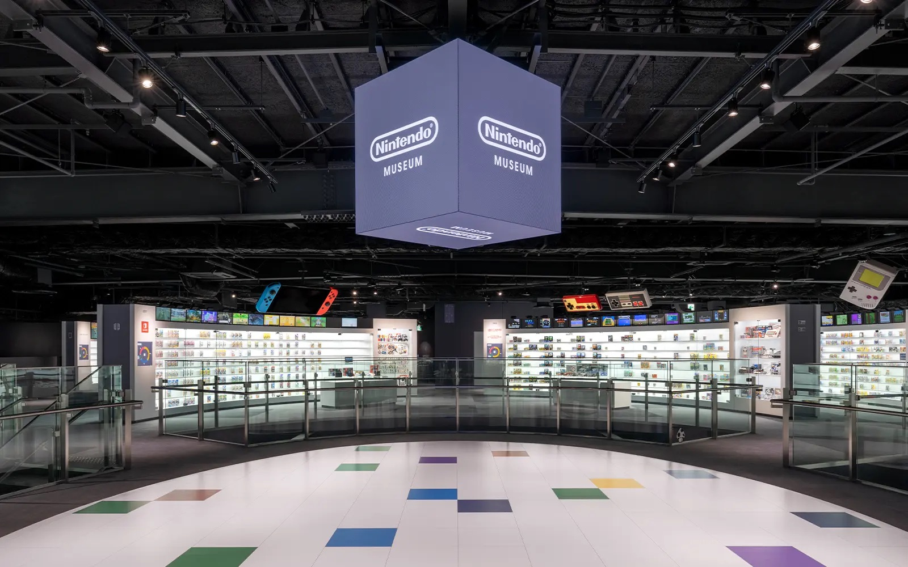

DATE SPOT
2026年関西の最新デートスポット5選
今年の連休はどこに行く？絶対に外さない、関西の最新＆超人気デートスポットを
ランキング形式でご紹介します。

第1位：光の迷宮に迷い込む没入体験
1. チームラボ バイオヴォルテックス 京都
京都に誕生した常設のチームラボ。光と音が織りなす幻想的な空間は、どこを切り取っても「奇跡の1枚」が撮れます！スマホの容量を空けてから行くのがおすすめ◎
スポット詳細をチェックする
第2位：淡路島エリアの新・映えスポット！
2. Awaji Earth Museum
食・遊・憩が詰まった全天候型の複合施設。地元の絶品グルメを楽しんだ後は、
フォトスポットで最高の思い出を残しちゃおう♡

第3位：神戸の新しい海辺のシンボル
3. TOTTEI PARK（トッテイパーク）
神戸港に誕生した階段状の「緑の丘」。夕暮れ時に海風を感じながら
2人で座っているだけで、エモすぎる映画のワンシーンに！

第4位：遊び心満載の大人デート体験
4. ニンテンドーミュージアム
任天堂の歴史が詰まった体験型スポット！懐かしのゲームや巨大コントローラーで
協力プレイすれば、2人の距離がグッと縮まること間違いなし！

第5位：都会の真ん中でピクニック
5. グラングリーン大阪（うめきた公園）
梅田のど真ん中に誕生した巨大な緑のオアシス。レジャーシートを広げて
スタバの新作を飲むだけで、最高に優雅なチルタイムが過ごせます♪